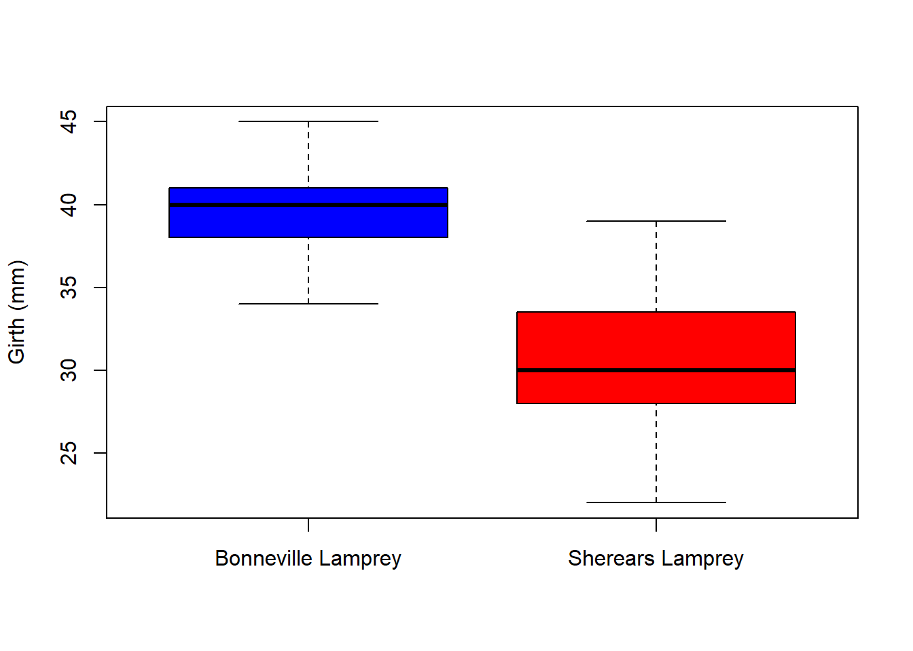
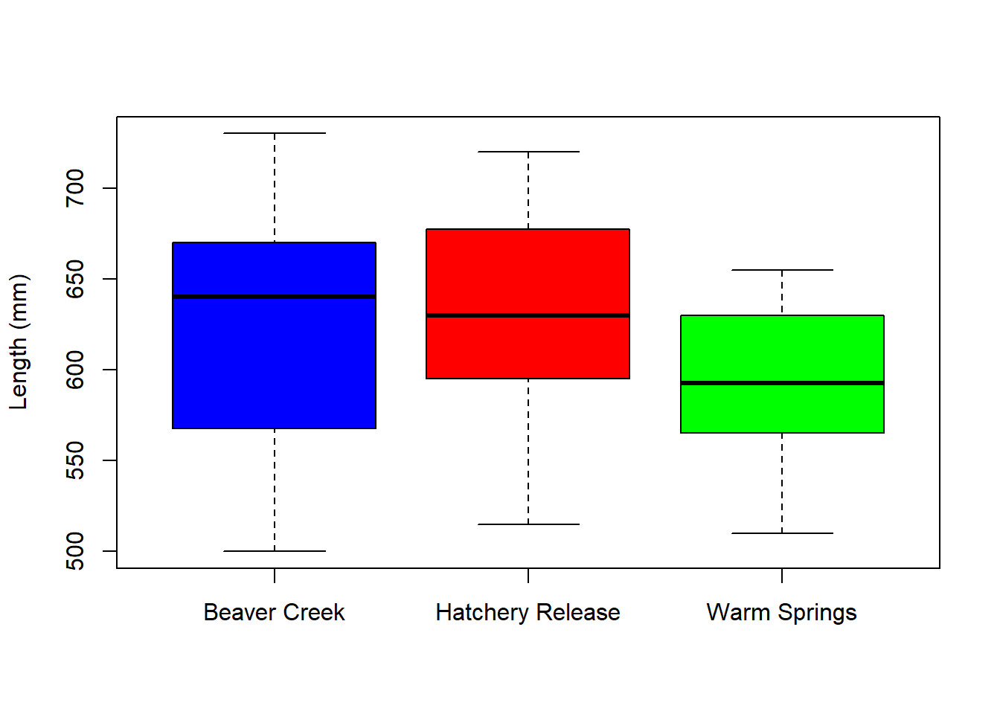
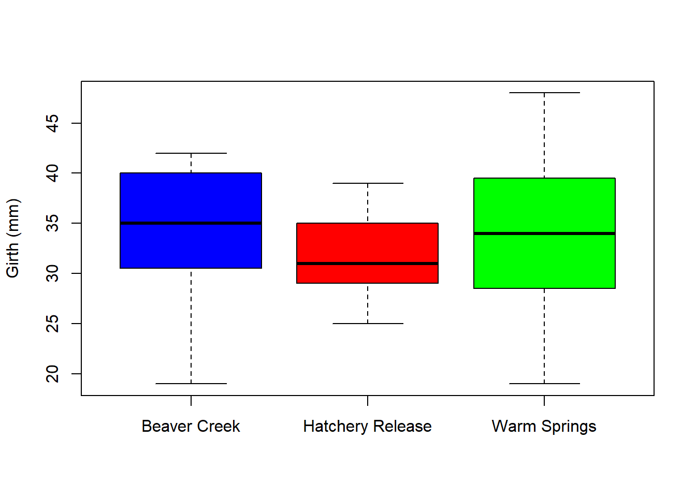
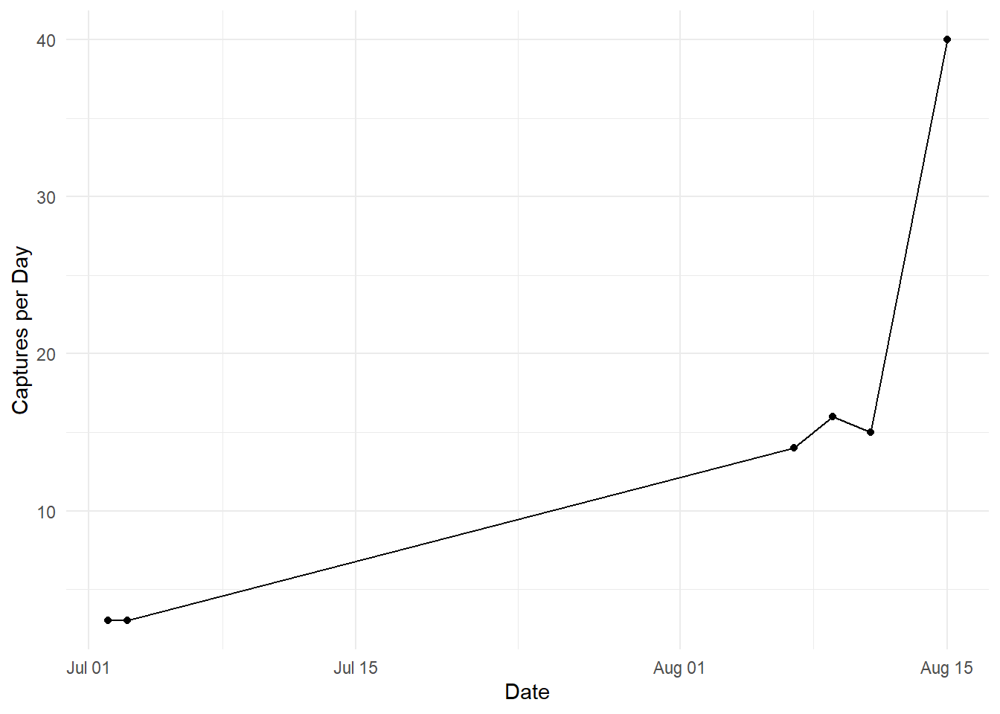

Chapter 4 Data Visualization
4.1 Boxplots, lamprey lengths per capture and per release site
##
## Attaching package: 'dplyr'## The following objects are masked from 'package:stats':
##
## filter, lag## The following objects are masked from 'package:base':
##
## intersect, setdiff, setequal, unionlength_bonneville <- left_join(Morphometrics, Lamprey, by = "Lamprey ID") %>%
select(-"Measurement ID",-"Genetic.x", -"Release Site", -"Genetic.y", -"Release Site", -"PIT Tags #",
-"Lamprey ID", -"Girth (mm)") %>%
select("Capture Site", "Length (mm)") %>%
rename(capture_site = "Capture Site", length = "Length (mm)") %>%
filter(capture_site == "Bonneville") %>%
select("length") %>%
rename(bonneville_length = "length")
length_sherears <- left_join(Morphometrics, Lamprey, by = "Lamprey ID") %>%
select(-"Measurement ID",-"Genetic.x", -"Release Site", -"Genetic.y", -"Release Site", -"PIT Tags #",
-"Lamprey ID", -"Girth (mm)") %>%
select("Capture Site", "Length (mm)") %>%
rename(capture_site = "Capture Site", length = "Length (mm)") %>%
filter(capture_site == "Shears") %>%
select("length") %>%
rename(sherears_length = "length")
boxplot(length_bonneville$bonneville_length,length_sherears$sherears_length,
names = c("Bonneville Lamprey", "Sherears Lamprey"),
ylab = "Length (mm)",
col= c("blue", "red"))
girth_sherears <- left_join(Morphometrics, Lamprey, by = "Lamprey ID") %>%
select(-"Measurement ID",-"Genetic.x", -"Release Site", -"Genetic.y", -"Release Site", -"PIT Tags #",
-"Lamprey ID", -"Length (mm)") %>%
select("Capture Site", "Girth (mm)") %>%
rename(capture_site = "Capture Site", girth = "Girth (mm)") %>%
filter(capture_site == "Shears") %>%
select(girth) %>%
rename(sherears_girth = "girth")
girth_bonneville <- left_join(Morphometrics, Lamprey, by = "Lamprey ID") %>%
select(-"Measurement ID",-"Genetic.x", -"Release Site", -"Genetic.y", -"Release Site", -"PIT Tags #",
-"Lamprey ID", -"Length (mm)") %>%
select("Capture Site", "Girth (mm)") %>%
rename(capture_site = "Capture Site", girth = "Girth (mm)") %>%
filter(capture_site == "Bonneville") %>%
select(girth) %>%
rename(bonneville_girth = "girth")
boxplot(girth_bonneville$bonneville_girth, girth_sherears$sherears_girth,
names = c("Bonneville Lamprey", "Sherears Lamprey"),
ylab = "Girth (mm)",
col= c("blue", "red"),
outline = FALSE)
beaver_length_release <- left_join(Morphometrics, Lamprey, by = "Lamprey ID") %>%
select(-"Measurement ID",-"Genetic.x", -"Genetic.y", -"Capture Site", -"PIT Tags #",
-"Lamprey ID", -"Girth (mm)") %>%
select("Release Site", "Length (mm)") %>%
rename(release_site = "Release Site", length = "Length (mm)") %>%
mutate(release_site = case_when(
release_site == "Beaver" ~ "BEAV",TRUE ~ release_site)) %>%
filter(release_site == "BEAV") %>%
select(length) %>%
rename(beaver_length = "length")
ws_length_release <- left_join(Morphometrics, Lamprey, by = "Lamprey ID") %>%
select(-"Measurement ID",-"Genetic.x", -"Genetic.y", -"Capture Site", -"PIT Tags #",
-"Lamprey ID", -"Girth (mm)") %>%
select("Release Site", "Length (mm)") %>%
rename(release_site = "Release Site", length = "Length (mm)") %>%
mutate(release_site = case_when(
release_site == "Beaver" ~ "BEAV",TRUE ~ release_site)) %>%
filter(release_site == "WS") %>%
select(length) %>%
rename(ws_length = "length")
hatch_length_release <- left_join(Morphometrics, Lamprey, by = "Lamprey ID") %>%
select(-"Measurement ID",-"Genetic.x", -"Genetic.y", -"Capture Site", -"PIT Tags #",
-"Lamprey ID", -"Girth (mm)") %>%
select("Release Site", "Length (mm)") %>%
rename(release_site = "Release Site", length = "Length (mm)") %>%
mutate(release_site = case_when(
release_site == "Beaver" ~ "BEAV",TRUE ~ release_site)) %>%
filter(release_site == "WS Hatch") %>%
select(length) %>%
rename(hatch_length = "length")
boxplot(ws_length_release$ws_length,beaver_length_release$beaver_length,hatch_length_release$hatch_length,
names = c("Beaver Creek", "Hatchery Release", "Warm Springs"),
ylab = "Length (mm)",
col = c("blue","red","green"))
beaver_girth_release <- left_join(Morphometrics, Lamprey, by = "Lamprey ID") %>%
select(-"Measurement ID",-"Genetic.x", -"Genetic.y", -"Capture Site", -"PIT Tags #",
-"Lamprey ID", -"Length (mm)") %>%
select("Release Site", "Girth (mm)") %>%
rename(release_site = "Release Site", girth = "Girth (mm)") %>%
mutate(release_site = case_when(
release_site == "Beaver" ~ "BEAV",TRUE ~ release_site)) %>%
filter(release_site == "BEAV") %>%
select(girth) %>%
rename(beaver_girth = "girth")
hatch_girth_release <- left_join(Morphometrics, Lamprey, by = "Lamprey ID") %>%
select(-"Measurement ID",-"Genetic.x", -"Genetic.y", -"Capture Site", -"PIT Tags #",
-"Lamprey ID", -"Length (mm)") %>%
select("Release Site", "Girth (mm)") %>%
rename(release_site = "Release Site", girth = "Girth (mm)") %>%
mutate(release_site = case_when(
release_site == "Beaver" ~ "BEAV",TRUE ~ release_site)) %>%
filter(release_site == "WS Hatch") %>%
select(girth) %>%
rename(hatch_girth = "girth")
ws_girth_release <- left_join(Morphometrics, Lamprey, by = "Lamprey ID") %>%
select(-"Measurement ID",-"Genetic.x", -"Genetic.y", -"Capture Site", -"PIT Tags #",
-"Lamprey ID", -"Length (mm)") %>%
select("Release Site", "Girth (mm)") %>%
rename(release_site = "Release Site", girth = "Girth (mm)") %>%
mutate(release_site = case_when(
release_site == "Beaver" ~ "BEAV",TRUE ~ release_site)) %>%
filter(release_site == "WS") %>%
select(girth) %>%
rename(ws_girth = "girth")
boxplot(beaver_girth_release$beaver_girth,hatch_girth_release$hatch_girth,ws_girth_release$ws_girth,
names = c("Beaver Creek","Hatchery Release","Warm Springs"),
ylab = "Girth (mm)",
col = c("blue","red","green"))
capture_per_day_sherears <- Captures %>%
select(-"Capture ID", -"Lamprey ID") %>%
rename(capture_site = "Capture Site") %>%
mutate(capture_site = case_when(
capture_site == "Shears" ~ "Sherears", TRUE ~ capture_site)) %>%
filter(capture_site == "Sherears") %>%
group_by(Date) %>%
tally
capture_per_day_sherears$Date <-gsub("/", "-", capture_per_day_sherears$Date)
capture_per_day_sherears$Date <- as.Date(capture_per_day_sherears$Date, format = "%m-%d-%y")
capture_per_day_sherears <- capture_per_day_sherears[order(capture_per_day_sherears$Date),]
ggplot(capture_per_day_sherears, aes(x = Date, y = n)) +
geom_line() +
geom_point() +
labs(x = "Date", y = "Captures per Day") +
theme_minimal()
tag_survival_capture_site <- full_join(Lamprey, Tags) %>%
select(-"Lamprey ID", -"Capture Site", -"Genetic", -"PIT Tag #",-"PIT Tags #") %>%
rename(release_site = "Release Site") %>%
mutate(survival = ifelse(Status == "Alive", 1, 0)) %>%
filter(release_site == "WS Hatch") %>%
select(-"Status") %>%
summarize(sum(survival)/40)*100## Joining with `by = join_by(`Lamprey ID`)`## sum(survival)/40
## 1 82.5